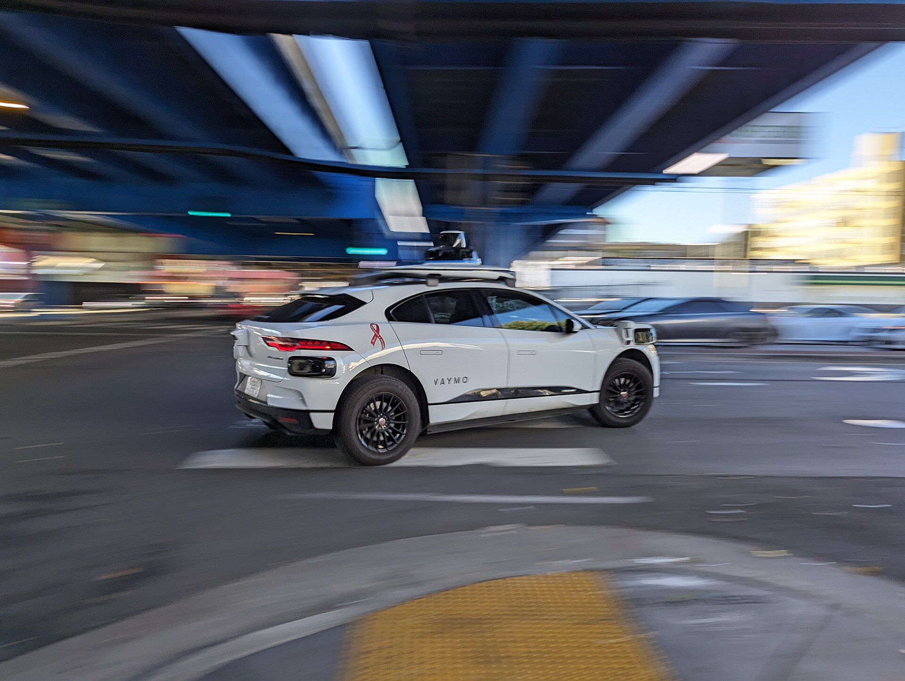
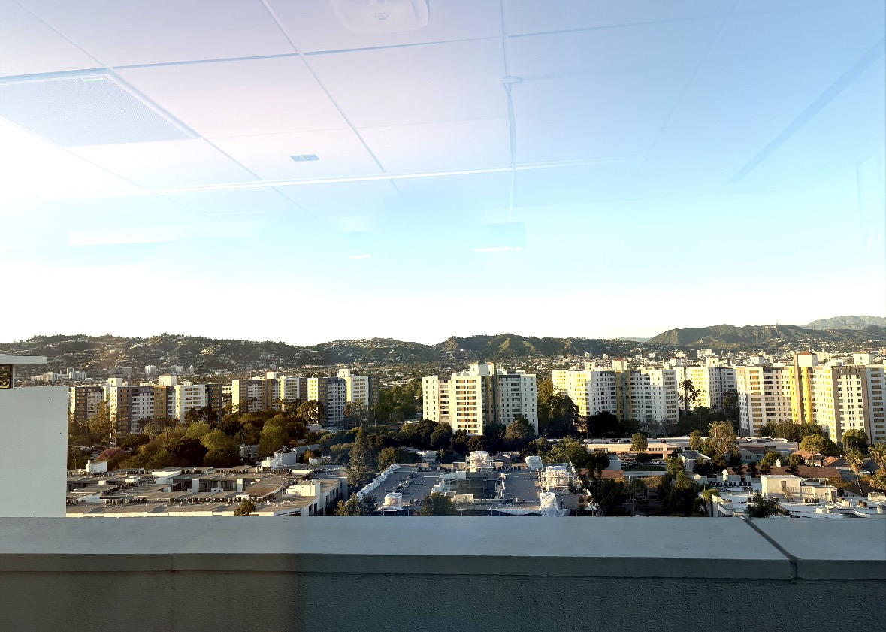
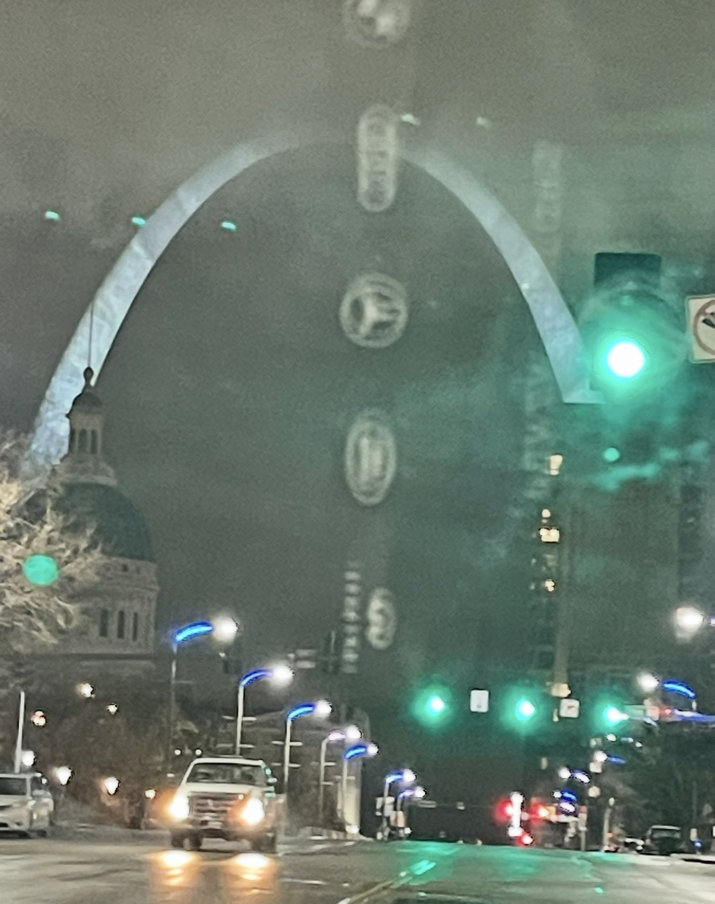
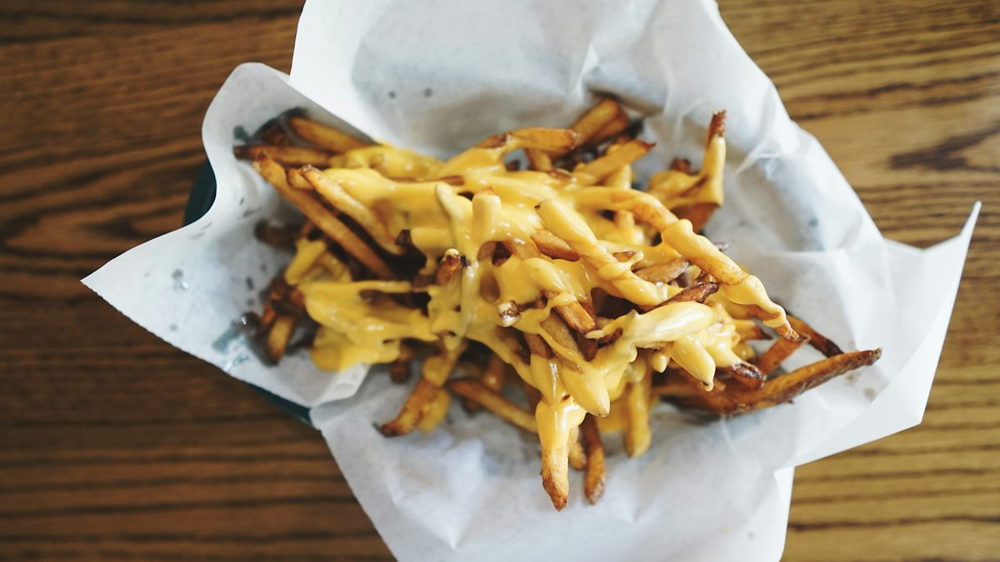
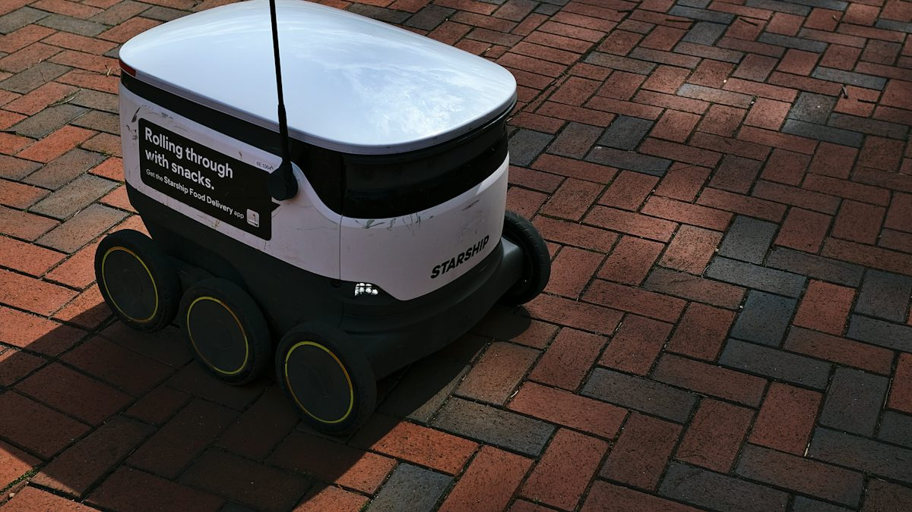
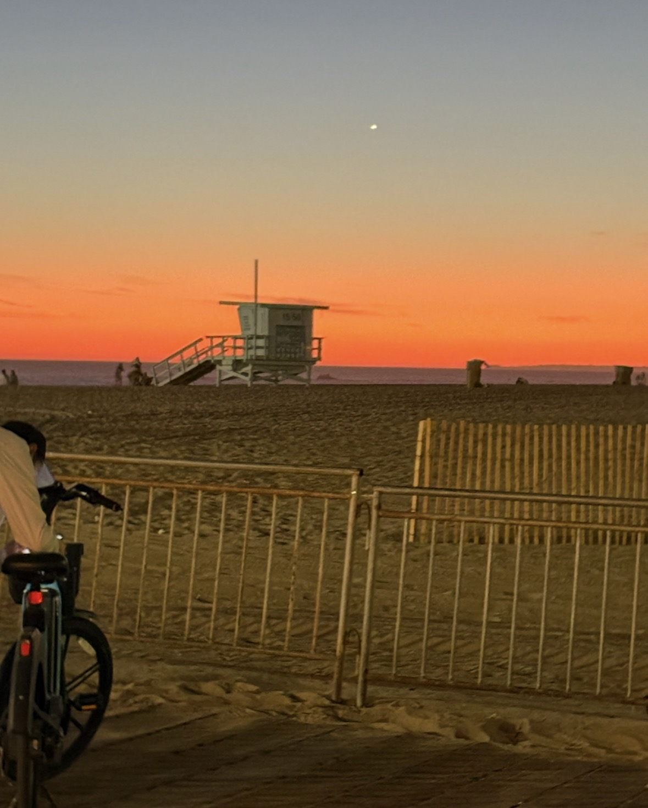

The Waymos are what surprise us first. On screen, they blur into the electric tide of Los Angeles, turning the city into a glassy machine of smooth movement and bright, private certainty.

The Uber driver points out the Los Angeles atmosphere with a kind of resigned amusement, as though we have wandered into a futuristic film set. A friend in the back seat says the city feels like everybody is an automaton in sunny slow motion.

My tween daughter is convinced Waymos and delivery robots are trying to replace all human life. A friend says the sidewalk rovers are too stupid to be trusted with a single errand, which is exactly why they seem funny and unnerving at once.
We can't figure out how to open the doors of more than one Uber car. They are nicer than other cars we have ever been in. The drivers have thick accents, sunglasses, and the sort of calm that makes every traffic jam feel like it belongs to another planet. We are in the middle of a long trip that started with Burbank, where the airport feels like a small, sun-bitten museum of old California.

The Uber driver takes us to In-N-Out. We don't know what to order. We are hungry, tired, and too keyed-up to be reasonable. The fries arrive stiff with cheese, the kind of congealed, glossy heap that makes the city feel both lavish and slightly corrupt.

My daughter complains that everyone is unfriendly. I explain that in LA people are private. Eyes forward. Eyes glazed. They are not rude; they are merely occupied by their own weather and their own speed. It is a city of glass and motion, where a DoorDash robot might be side-stepping a crack in the pavement while a human appears to be running a private software update inside their own skull.

We get off the plane and the world is greasy with food scent and warm, bright exhaustion. It feels like people are rushing around a system that has swallowed all of them whole. We agree that no one in LA eats. This is familiar, somehow, because I know St. Louis well enough to recognize the difference between weather and temperament. The names of the places are not the point. The point is how the scene tilts our bodies and our language. There is always a camera in the corner, and every human moves as if they are being observed by a machine made of sunlight.
“How was LA?” he asks. “Everyone is a robot, the cheese is congealed, and no one eats,” my daughter tells him. I stare ahead at the windows and at the way the day keeps folding itself into another version of itself, as if we have stepped into a near-future memory made of desert air, cheap hospitality, and endless implied motion.
